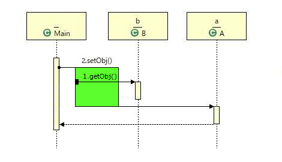
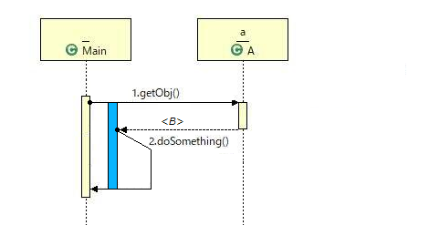

拡張シーケンス図は，複数のメソッド呼び出しの間の関係を表現できるようシーケンス図を拡張したもので，メソッド呼び出しのネストやチェインを表現することができる可視化手法です．
拡張シーケンス図による可視化の多くの部分はシーケンス図と共通です．
複数のメソッド呼び出しの間にネストやチェイン，再帰などがあった場合に，その関係を表現できるようシーケンス図を拡張しています．
今回の実験では，ネストとチェインしか出現しないため，それらについてのみ説明します．
メソッド呼び出しのネストとは，a.setObj(b.getObj()) のように，メソッド呼び出しの戻り値を別のメソッド呼び出しの引数として渡すようなメソッド呼び出し列です．
拡張シーケンス図では，このようなメソッド呼び出しのネストを以下のように表します．

メソッド呼び出しのチェインとは，a.getObj().doSomething() のように，メソッド呼び出しの戻り値に対して連続してメソッド呼び出しを行うようなメソッド呼び出し列です．
拡張シーケンス図では，このようなメソッド呼び出しのチェインを以下のように表します．
ただし，図中の <B> は，a.getObj() の戻り値オブジェクトのクラスが B であることを示しています．
